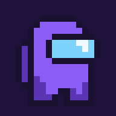

You've got this, girlypop 💜

One tap away whenever it's study time 💜
You crushed that focus session!
💧 Drink some water, bestie!
Ready for another round? You're doing amazing.
Long break after every 4 focus sessions 🌙